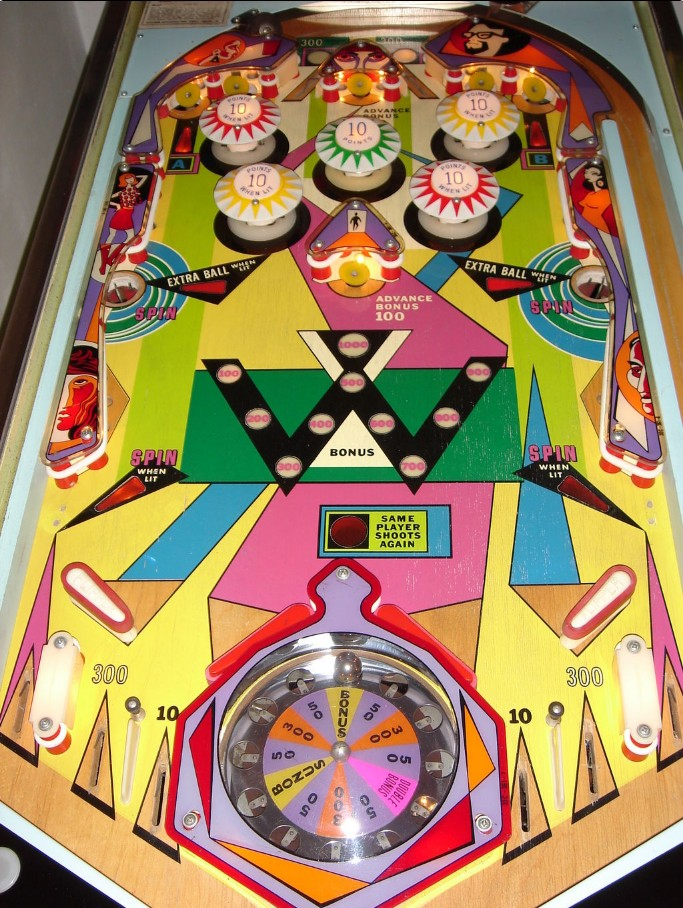

Ball control is rare on Suspense, but when you do have some, shoot up the edges of the table to try to get A and B letters or make the Spin holes on the sides. Bonus is advanced by the two Advance Bonus targets at the center and top center of the table. Bonus is not collected at the end of the ball and does not reset between players in a 2 player game, so if the Bonus is high, prioritize shooting for the Spin saucers only to take advantage.
The below picture of 's playfield was taken from the Internet Pinball Database, where it was originally provided by Marcel Roth.

Suspense is known for having one of the strangest and most unique flipper layouts in all of pinball, so this section appears first.
Suspense has 4 flippers at the bottom of the playfield. Near the outer edges are 2-inch flippers, one on each side, which face inward. These flippers work as expected: the left button operates the left flipper, and the right button operates the right flipper. At the center of the table are two 3-inch flippers, and pressing either flipper button will cause both of these flippers to flip.
In general, use the mini-flippers on the sides to save the ball and prevent it from finding an out lane, and use the full size flippers in the middle toward the top corners of the table for A-B or the side saucers for a Spin.
Suspense has two top lanes, of which one is always lit. The unlit top lane scores 100 points, while the lit top lane scores 300. 1-point switch hits alternate which top lane is lit.
The center top target scores 100 points and advances the Bonus, which is explained in the next section. All other top standup targets score 10 points.
The leftmost and rightmost top targets award the letters A and B respectively when hit. Earning A lights the red pop bumpers (top left and lower right) for 10 points. Earning B lights the yellow pop bumpers (top right and lower left) for 10 points. Unlit bumpers score 1 point. The center green bumper is always lit for 10 points. Collecting both A and B on the same ball lights one of the side saucers for extra ball, which alternates each time a 1-point switch is scored. There is a maximum of 1 extra ball per ball in play. A-B letters are reset every ball.
Making either side saucer at any time awards a Spin. You can also earn a Spin by draining down a lit far out lane (one out lane is lit for Spin at any time, alternating on 1-point switch hits). Earning a Spin causes the roulette wheel set into the table to spin briefly, then stop, causing a mini-pinball inside to spin around and eventually settle into one of 12 holes. When the ball settles, the value of that wedge is awarded. 6 of the 12 wedges award 50 points; 3 wedges award 300 points; 2 wedges award Bonus; and 1 wedge awards Double Bonus. Unless the whole machine is angled in an unconventional way or leans to the left or right, the ability to influence the roulette via nudging is minimal.
Bonus is advanced each time the top center standup target or the center playfield standup target is hit (directly above and below the green bumper). Both of these standup targets also score 100 points. One bonus advance is worth 100 points, and the bonus maxes out at 1,000 points. The Bonus is not awarded at the end of the ball: the only way to score the Bonus is to earn Bonus or Double Bonus from a wheel spin, which resets the Bonus back to 100 points. The Bonus never resets on its own during a game, so if you do not collect the Bonus, it will remain for your next ball- unless you're playing a 2-player game, in which case the other player can steal the Bonus from you. On conservative settings, the Bonus resets to 100 points at the start of each game, but on liberal settings, the Bonus will never reset at all until being collected, meaning its value is preserved from game to game as well.
See the top of this game's guide for information about Suspense's flipper layout.
There are 3 out lanes on each side of the game. Starting in the middle and going outwards, these lanes award 10 points, then 300 points, then 10 points plus a Spin when lit. Only one of the far out lanes is lit for Spin at a time, alternating based on 1-point switch hits. The 300-point out lanes are almost entirely obscured by the mini-flippers close to the sides of the table, and the ball will only go down these lanes if it bounces under a raised mini-flipper.
Extra balls cannot be set to points. There are no playfield Specials. Reaching the pre-set replay score can provide one extra ball or one replay, at operator discretion. There is a maximum of 1 extra ball per ball in play, no matter how the game is set up. Tilt ends the ball in play only.